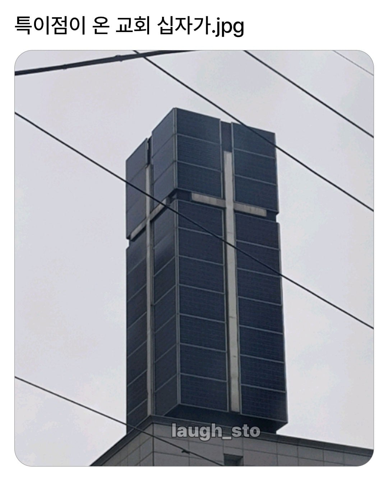
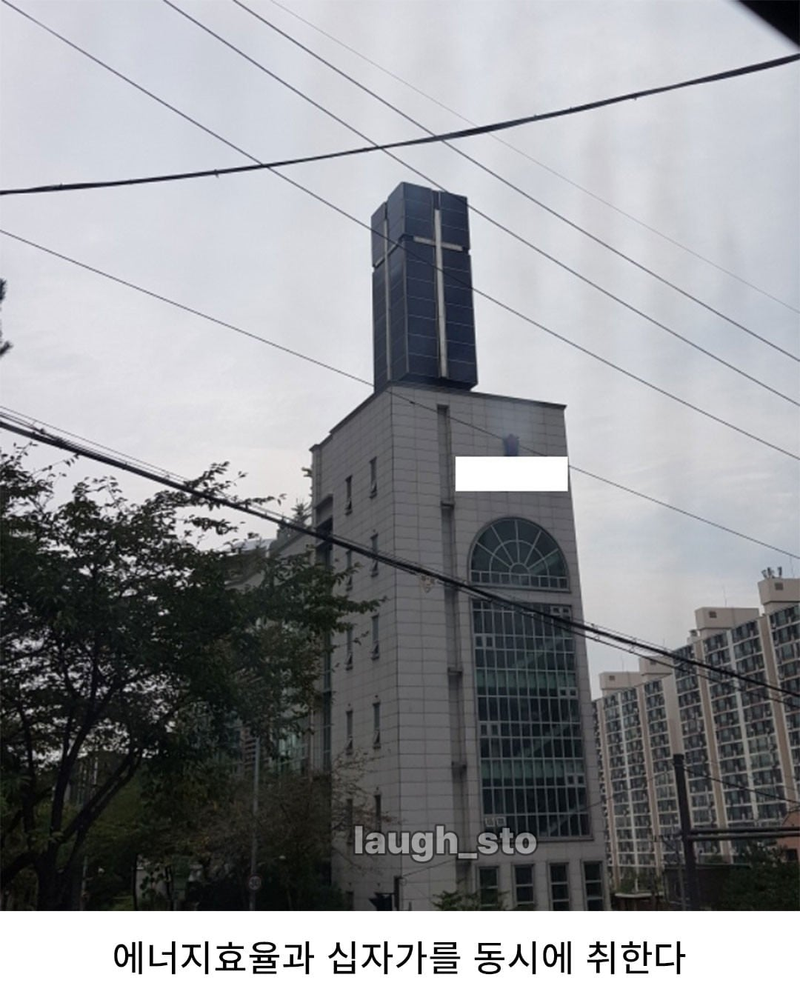

119 · 23 · 19 시간 전 · 원문


수집 당시 댓글 23개
펭귀니조아 · 17 시간 전
미구 · 16 시간 전
십자가를 음각으로 새겼으면 안도다다오~?
오르다말아 · 15 시간 전
후광은 태양광이었던거임ㄷㄷ
CeylonTea · 12 시간 전
이게 리얼 빛의 교회ㅋㅋㅋ
긍정축재 · 8 시간 전
형민우 복귀해라 ㅠㅠ
17세여고생 · 7 시간 전
테크놀로지아~
공부해서남준다 · 6 시간 전
빛좋은 개신교
↳ 답글 · 드립조절장애 · 6 시간 전
캬
회사에서코고는중 · 6 시간 전
뭔가 열리면서 대구경 대포가 나올거 같냐
숏컷거유톰보이 · 6 시간 전
태양의 힘으로 교회가 돌아가는거면 태양교 아니냐
허리디스커 · 6 시간 전
이거랑 별개로 요즘 교회들 빛의교회에서 영감받은 디자인 많더라 ㅋㅋ
피자스쿨 · 6 시간 전
태양만세~
년차급발진 · 6 시간 전
태양신을 숭배하는것임?
광개토대마왕 · 5 시간 전
이게 사이버펑크네
트라진 · 5 시간 전
뭔가 쌈뽕한게 멋있는데?ㅋㅋㅋ
↳ 답글 · descrypt · 5 시간 전
모노리스 생각나는데 ㅋㅋㅋ
나무닆 · 5 시간 전
어 이거....워해머40k 네크론...?
치맥전자 · 5 시간 전
변신할것같네
norepfool · 4 시간 전
안도 다다오급이네
피코리타 · 2 시간 전
고효율 예수님
키티호크 · 1 시간 전
근데 저렇게 되어 있으면 효율 개판일거 같은데수직으로 빛이 들어오는게 효율이 제일 좋은거 아님?
↳ 답글 · maru7178 · 3 분 전
수평설치하면 비나 눈올때 치워줘야 하고, 먼지 쌓인거 청소해줘야 해서관리하기 편하려고 수직으로 설치하는듯
멋지고좋은하루되세요 · 1 시간 전
좋은데?
댓글
수집 당시 댓글 23개
펭귀니조아 · 17 시간 전
미구 · 16 시간 전
십자가를 음각으로 새겼으면 안도다다오~?
오르다말아 · 15 시간 전
후광은 태양광이었던거임ㄷㄷ
CeylonTea · 12 시간 전
이게 리얼 빛의 교회ㅋㅋㅋ
긍정축재 · 8 시간 전
형민우 복귀해라 ㅠㅠ
17세여고생 · 7 시간 전
테크놀로지아~
공부해서남준다 · 6 시간 전
빛좋은 개신교
· 드립조절장애 · 6 시간 전
캬
회사에서코고는중 · 6 시간 전
뭔가 열리면서 대구경 대포가 나올거 같냐
숏컷거유톰보이 · 6 시간 전
태양의 힘으로 교회가 돌아가는거면 태양교 아니냐
허리디스커 · 6 시간 전
이거랑 별개로 요즘 교회들 빛의교회에서 영감받은 디자인 많더라 ㅋㅋ
피자스쿨 · 6 시간 전
태양만세~
년차급발진 · 6 시간 전
태양신을 숭배하는것임?
광개토대마왕 · 5 시간 전
이게 사이버펑크네
트라진 · 5 시간 전
뭔가 쌈뽕한게 멋있는데?ㅋㅋㅋ
· descrypt · 5 시간 전
모노리스 생각나는데 ㅋㅋㅋ
나무닆 · 5 시간 전
어 이거....
워해머40k 네크론...?
치맥전자 · 5 시간 전
변신할것같네
norepfool · 4 시간 전
안도 다다오급이네
피코리타 · 2 시간 전
고효율 예수님
키티호크 · 1 시간 전
근데 저렇게 되어 있으면 효율 개판일거 같은데
수직으로 빛이 들어오는게 효율이 제일 좋은거 아님?
· maru7178 · 3 분 전
수평설치하면 비나 눈올때 치워줘야 하고, 먼지 쌓인거 청소해줘야 해서
관리하기 편하려고 수직으로 설치하는듯
멋지고좋은하루되세요 · 1 시간 전
좋은데?